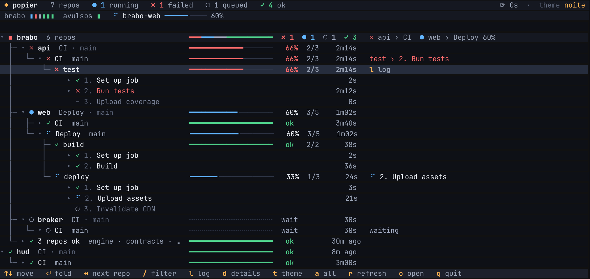
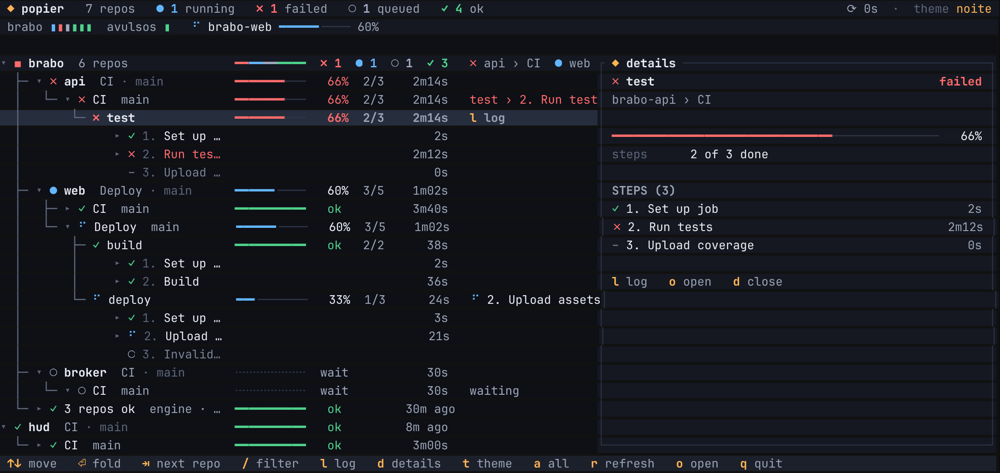
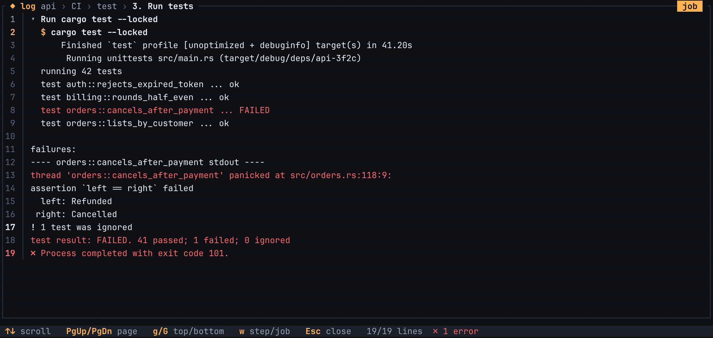
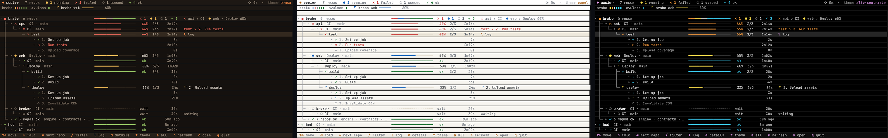

Stop opening a browser tab per repo to find out which pipeline broke. popier shows all of them in one tree, repo → workflow → job → step, with progress bars, the failing step called out, and its log one key away.
curl -fsSL https://viralabs-dev.github.io/popier/install.sh | sh

gh login and finds your repos for youRecorded live against the public repositories of viralabs-dev. Nothing staged.
init --discover lists the repositories your GitHub login can see, keeps the ones with active workflows, groups repos that share a name prefix and writes the config. --public keeps it to public repos, handy for a demo or a shared screen.
popier init --discover --owner your-org
popierA multi-repo project becomes a group with a health bar, a count per state and the reasons it needs you (✗ api › CI). Green repos fold into one ✓ N repos ok line. d opens the details sidebar, t cycles the themes.
[[group]]
name = "brabo"
repos = ["org/brabo", "org/brabo-api", "org/brabo-web"]Unfold anything with Enter or a click. On a step, the end of its log shows right below it; l opens just that step's output in a panel, cut from the job log. / filters by branch or #PR.
[[repo]]
slug = "org/api"
branch = "main" # optionalBuilt for people who ship across many repositories and want to know, at a glance, what is broken, where, and whether the fix is still running.
The latest run of every workflow in every repo, down to each job and step, refreshed every minute.
Failed, running and queued pipelines open by themselves; the culprit is right on the line: test › 2. Run tests.
Group a multi-repo project into one row with a health bar ✗ 1 ● 1 ✓ 3 and the reasons it needs you.
l shows only the failing step's output, errors highlighted, escape codes stripped. popier once --logs prints them for scripts.
ghYour token comes from GITHUB_TOKEN, GH_TOKEN or gh auth token. init --discover writes the config.
A ping when a workflow starts failing, and a quiet one when it recovers. Limit it to main if you like.
Noite, Brasa, Papel (light), Alto contraste (color-blind safe), or your terminal's own 16 colors. Or write your own.
ETag caching: unchanged data comes back as 304 and doesn't count against your 5,000 requests/hour.
Vim keys, Tab between projects, click to fold, wheel to scroll, o opens the run on GitHub.


Glyph and color for every state, never color alone. 4.5:1 contrast in every theme, 7:1 in high contrast. Try them on this page:
theme = "brasa"
Linux x86_64. Static musl build runs on any distro; or build it from source with Rust 1.85+.
Downloads the static binary from the latest release, checks its SHA-256 and puts it in ~/.local/bin.
curl -fsSL https://viralabs-dev.github.io/popier/install.sh | shUses your gh login. Groups projects for you.
popier init --discoverOr popier once to print the tree and exit.
popierread it first: install.sh · another folder: POPIER_INSTALL_DIR=/usr/local/bin · from source: cargo install --git https://github.com/viralabs-dev/popier